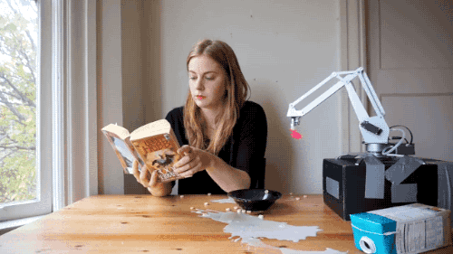

The Koolaid
Software development is hard

How do we make work dope?
We put people first
We have super tight feedback loops
We continuously improve ourselves
We have fun
As a Lab

Breakfast
Global and site standups
Figure out what's working and not working
Lunch
A clean lab
As a Team
Small and flat
Product Manager
Anchor
Developer
Standups
We pair
and we rotate our pairs daily
Interrupt pair
Breaks
take them before you need them
Meetings
(hootenannies, shindigs, hoedowns)
Iteration Planning Meeting
("IPM")
Code review/tech retro
Pre-Iteration Planning Meeting
("pre-IPM")
Weekly retro
User feedback
As as a pair

Workstations are sacred
Feedback on the spot
kind, actionable, specific
Learning all the time
Red, green, refactor
(test-driven development)